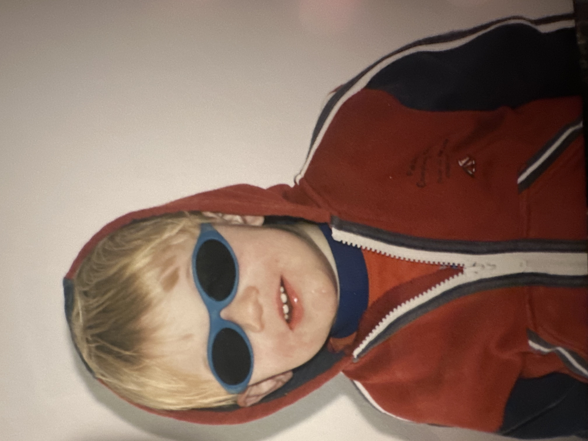
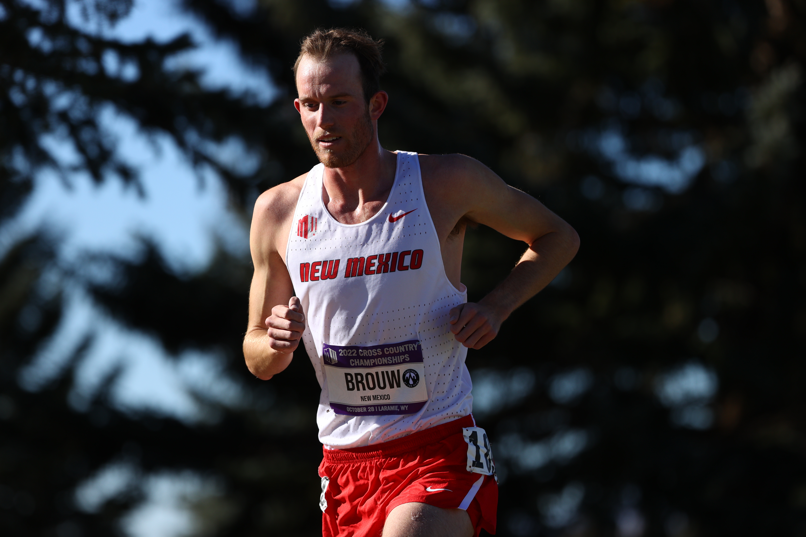
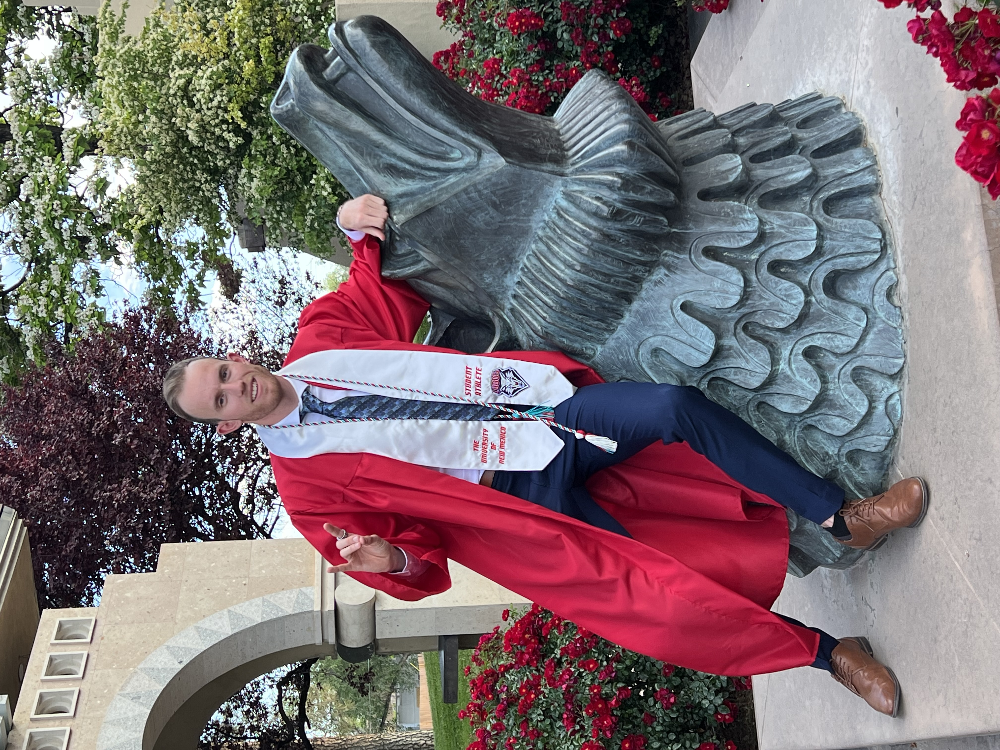
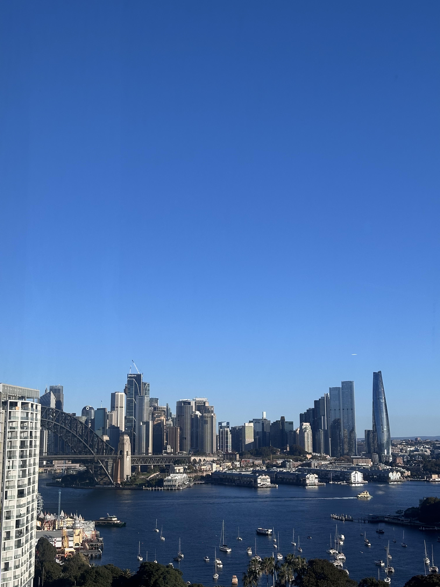
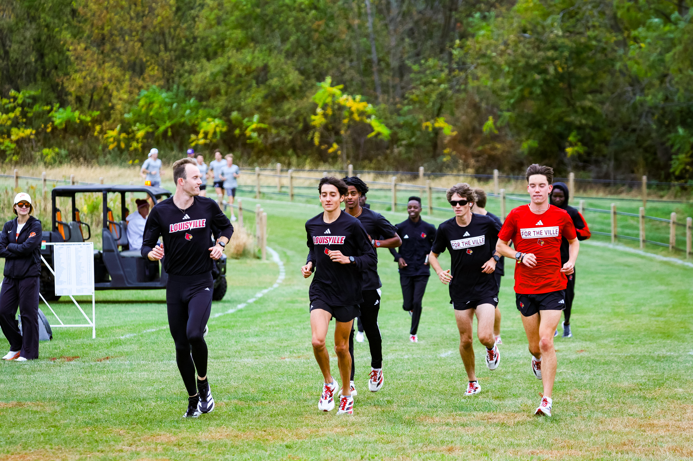

I SOLVE PROBLEMS — UNTAMED WONDER, RELENTLESS CURIOSITY, & ENGINEERED PHYSIOLOGY
Driven by curiosity and an innate compulsion to solve complex physical and operational problems. By understanding human biomechanics and engineering system constraints, I turn breakdown points into breakthrough performance. Who I am is shaped by continuous failure, perseverance, and the childlike wonder to repeat.
"The best time to plant a tree was 30 years ago. The second best time is now."
— Unknown"By all means, grow old, but don't mature. Remain childlike, retain wonder, the ability to be flabbergasted by something."
— Billy ConnollyKEY SPECS
- EVENT: 800m Outdoor & Indoor
- PB TIME: 1:46:88
- HONORS: NCAA All-American
- DEGREE: B.S. Mechanical Eng.
- CURRENT: MBA Candidate '27
WHY ME? WHY NOW?K
BRIDGING HIGH-LEVEL BUSINESS STRATEGY WITH DAILY TECHNICAL EXECUTION
The Reality I See
- Communication Failure: Mechanical & electrical designs break when teams silo.
- Clarity Under Pressure: Upgrading public infrastructure (e.g. Sydney Airport) demands calm engineering leadership.
The Reality of Me
- Grounded Practice: Hands-on experience at Introba with Revit, Bluebeam, and Airtable.
- Track Resilience: Elite 800m discipline translated into sustained high performance.
- Lead by Listening: Psychology & business foundations to build trust.
Why Me? Why Now? Pitch Deck
- Strategy + Execution: Connecting big-picture MBA goals with granular design reality.
- Steady Hand: Calm, decisive presence when deadlines tighten.
LEADERSHIP REALITY & PRESENCE WHEEL
Understanding my leadership profile: driving self-actualization by leveraging high Systems Ownership and Vision Crafting while actively strengthening structured Process Design.
RADAR PRESENCE MATRIX
THE MOMENTS THAT DEFINED ME
SYDNEY ROOTS ➔ NEW MEXICO TRACK ➔ INTROBA CONSULTING ➔ LOUISVILLE GRAD ASSISTANT





LIVE ARTIFACTS
Interactive software apps engineered for high-performance biomechanics and system analysis. Test both live web applications directly below!
THREE HORIZONS ARCHITECTURE
Execution & Presence
Efficient at executing tasks, consistent in measure and demeanor, as well as a team collaborator who can read the room and get the most out of individuals and teams.
Alter Ego & Mindset
Mastering the mental side of performance, creating a dedicated alter ego through journaling and visualization. Creating a version of myself that performs the tasks I want to perform.
Mental Rhetoric
Developing a genuinely balanced and consistent mental rhetoric around performance which helps me to become the best version of myself.
Congratulations!
You completed the 800m - bridging chess-like strategy, unwavering nerve and athletic endurance. Same time next week?
800M GOLD MEDAL FINISH
ETHAN BROUW • NCAA ALL-AMERICAN • MECHANICAL ENGINEER • MBA '27
Ready to connect on engineering consulting, business strategy, or high-performance leadership?